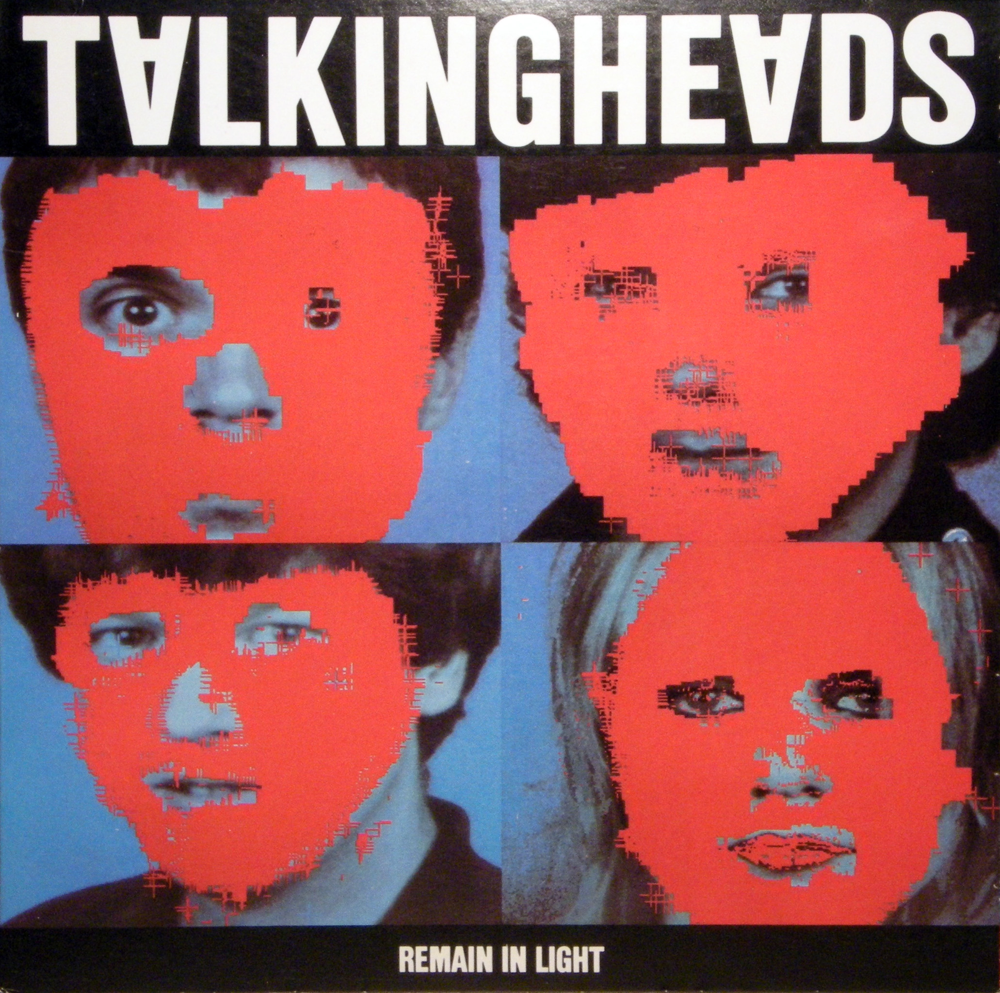

# A Non-Artist's Artistic Introduction to Data Visualization
# Hello, I'm Jim(my)
# (not an artist)


Not an artist
# Artsplaining
Human beings are always restricted to knowing about the universe or just stopped at the present state, such as, the appearance of the UFO, the existence space, the substance and the tools. Everything in the universe is just compared to the counterparts of the human being’s, which sounds ridiculous. Every so-called proof is perjury. The chaos of the universe is unexplained. The sensation of reality is just a sense, not the knowability. Sometimes the illusion is much closer to the truth. I therefore achieve my art career just through grasping the spirit from the universe. The explosion of the universe, black holes, interstellar, lightning and meteor shower etc are just the variables of cosmic spirit, whichincludes earth, human and life. All these three parts compose the heaven, land and people, which create in the constellations and five elements. My conception image art is based on these phenomenons. All the macro and micro deduce the cosmic spirit.
This body of work focuses on the moment in which antitheses collide. This work both formally and conceptually points to thresholds, spaces where both pain and pleasure are suggested but not explicitly manifested or differentiated. I seek to compound imagery that references painful visceral experiences with forms that are tactilely appealing. Specifically, this investigation seeks to portray the body in moments where it is trapped between condemnation and exaltation, degeneration and regeneration, repulsion and seduction. Whether articulated in painting, sculpture, or video my work attempts to create composite bodies, bodies that defy physical boundaries of surface, and boundaries of interior and exterior. Inspired by the uncanny notions of body and boundary manifested in gothic and contemporary villains, I adjoin materials that further obscure the inherently complex task of delineating seduction and repulsion. Similarly, moved by the paradoxical treatment of the “Catholic body”, this work investigates the psychological boundaries of the body tied to temptation, sin, guilt, purification, and redemption. Together, these works depict how the mind and body function at times congruently and at times independently in states where agony, ecstasy, sexuality, and violence are concerned.
# I want to believe
# Data Visualization
# _An Artistic Perspective_
# (not from an artist)
# What is Data Visualization?
# It's Complicated
# Many Consumers and Many Producers
# "The role of data visualization is to communicate data through stories."
# "The role of data visualization is to communicate _meaning_ through stories."
# _¿Stories?_
# One Story

# 100 Stories

# (let me _artsplain_ this)
# Data Design
# Designer person > Design(ing) Process > Designed Product > Outcome result
# Data design is a specific kind of design
# Design is a _process_ not a product
# What is (a) Data Visualization?
# A product of the data design process
# Effective
# Ineffective
# Effective Data Design
# Clarify What And Why
# _First step in the process_
Your audience
# Audience can be _you_
# Exploratory vs Explanatory
Respect your audience
# Rules
# Tufte Rules
# Visual Encoding
# Lots of rules to know

# Lots of rules to _break_
1 dimensional data should be shown in 1 dimensional visual
# Find Inspiration
# _Use_ Inspiration
# Iterate
"The loop is a near-universal symbol of (living) processes."
 Not an artist
Not an artist Your audience
Your audience


 "The loop is a near-universal symbol of (living) processes."
"The loop is a near-universal symbol of (living) processes."